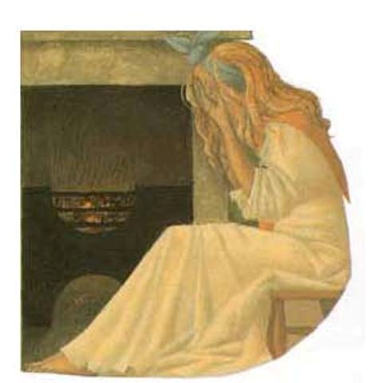

Le maire et la fillette
Une petite fille frappe de porte en porte un soir d’Halloween.
Malheureusement la récolte de friandises ne fut pas bonne:
“ Je n’ai reçu que dix réglisses! J’aurais tellement aimé avoir des caramels à la place…”
Soudain, au loin, elle aperçoit le maire de sa ville.
Le maire s’approche, il avance droit vers la petite fille.
« Le maire vient me voir ! pense la petite fille. Toute la ville vante sa générosité !
Il me donnera sûrement les caramels dont j’ai tant envie! »
Le maire s’arrête devant la petite fille, se tourne vers elle et la
regarde en souriant.
« Donne-moi des bonbons !» s’exclama le maire en tendant la main vers la jeune fille.
La jeune fille n’en revient pas. “C’est donc lui le maire si généreux ?! Je ne veux rien lui donner!” pense-elle.
Mais comment dire non au maire de sa ville?
Elle choisit alors un réglisse, le plus petit, le plus ancien, et
le tend à contre cœur au maire.
Le maire, toujours souriant, prend le réglisse et s’en va, sans dire un mot.
Le soir, en vidant son sac, le mendiant retrouve ses neuf pauvres réglisses ... et un petit caramel.
« Que je suis sotte, se lamente la jeune fille trop gourmande, pourquoi n’ai-je pas tout donné au maire! »
Plus on donne, plus on reçoit!